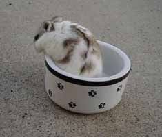
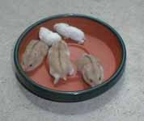
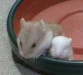
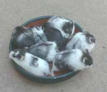

The Mottled Genes in the Campbells Dwarf Hamsters
| Genetics Feature: The Mottled Genes in the Campbells Dwarf Hamsters |
|||||||||||||||||||||||||||||||||
| By Linda Price | |||||||||||||||||||||||||||||||||
| There are two mottleds genes in the Campbells Dwarf Hamsters. Let me first describe what appearance the mottled gene gives to a dwarf hamster. Typically the belly is snow white, there is often a white collar around the neck, and ideally there are patches of color interspersed with patches of white on the back of the hamster. There is huge variation in the appearance of mottled hamsters. Some only have the white belly with the back a solid color. At the other extreme, some are almost all white with just a patch or two of color on the back. To see some of this variation, you can go to: www.geocities.com/AAAHamsters/Mottleds.html | |||||||||||||||||||||||||||||||||
| Ideally a Mottled hamster should have approximately equal amounts of color and white interspersed in a fairly symmetrical pattern. This pattern is not easy to get. You typically have to breed quite a few Mottleds to get one with a very good pattern. Here is a picture of a normal mottled with a fairly good pattern. | |||||||||||||||||||||||||||||||||
|  | |||||||||||||||||||||||||||||||||
| Genetically the two Mottled genes are represented by the symbols Mo and Mi. Both genes were found in 1991 in the UK. Both genes are also dominant and give the same outward appearance. Unfortunately we have not been able to find the Mo gene in the US. This gene is the non-lethal Mottled gene. The other gene, Mi, is the lethal Mottled gene and is referred to as the Ruby-eyed Mottled Gene. Here is California, since we only have the Ruby-eyed Mottled gene, we just refer to it as the Mottled gene and to the hamsters as Mottled hamsters. We all know this means the lethal Ruby-eyed Mottled dwarves but forget that many newcomers do not yet know about this gene. | |||||||||||||||||||||||||||||||||
| It is important to recognize our Mottleds as the lethal, Ruby-eyed Mottleds. By lethal, we mean that when a hamster receives two of these genes (one from each parent), there is a problem with the babies. Since this is a dominant gene, when you breed two Ruby-eyed Mottleds together, you will have approximately 25% of these defective babies. With this gene, the defect is that the babies will be eyeless, toothless, and white. Since they don't have developed teeth, they cannot usually survive the weaning process. The majority of them die at about two weeks of age. The few that do survive multiple months are perpetual runty white babies. Here are a couple of pictures of eyeless, toothless whites along with their larger, healthier littermates. These pictures were taken the day before the eyeless whites died. | |||||||||||||||||||||||||||||||||
|  | |||||||||||||||||||||||||||||||||
|  | |||||||||||||||||||||||||||||||||
| Note that mottling on the normal pups in this litter is hard to see. Although noticeable spotting is generally considered most desireable, some mottleds have very little white -- maybe only a white belly or a few white sections on their sides. | |||||||||||||||||||||||||||||||||
| There is a common misconception among breeders that only the hamsters with red eyes (i.e. the argentes, blue fawns, etc.) can have the Ruby-eyed Mottled gene. This is not true. The term "Ruby-eyed" does not refer to the normal eye color for that colored hamster. It refers to the ruby glow added to that eye color. In fact it is almost impossible to see the ruby eyes on the red-eyed hamsters like the argentes. It is best seen on the black-eyed hamsters like normals and opals. It is most visible at night or in a semi-dark room when a flashlight is directed toward the hamster's eyes. You can see a ruby glow to the eyes. This confirms the Ruby-eyed Mottled gene is there. In the red-eyed hamsters, the eyes tend to take on a lighter, brighter appearance although this is not as easy to observe and should not be relied on. Here in California, just know that all of your Mottleds are Ruby-eyed Mottleds and refrain from breeding any two of them together. | |||||||||||||||||||||||||||||||||
| There is another common fallacy among inexperienced breeders. Some breeders believe that you can only get good, show quality Mottled patterning by breeding two Ruby-eyed Mottleds together. This is not true. You can get equally good Mottled patterning by breeding a Mottled hamster to a non-Mottled, unpatterned hamster. The variation in appearance in Mottled hamsters is huge. Sometimes you will even get that variation in one litter. You just have to breed enough and keep the best patterned hamsters. I have noticed the tendency for Mottled hamsters to produce Mottled babies with approximately the same amount of color and white as themselves. Thus a Mottled hamster with very little white spotting tends to produce more with little white spotting. In this case, I just keep the babies with the most spotting and use those for breeding. I have had many exceptions to this, but it is a tendency I have observed in my animals. | |||||||||||||||||||||||||||||||||
| Since the Mottled genes are dominant, you never need to breed two Mottleds together to get Mottled babies. When you breed a Mottled hamster to a non-Mottled hamster, approximately half of the babies will be Mottled and half will not be Mottled. This will actually give you the same number of Mottled hamsters per litter but will eliminate the eyeless, toothless whites. So a responsible breeder always chooses to breedd a Mottled to a non-Mottled hamster. The picture shows the range of Black Mottleds (some of which are silvering) achieved by breeding a Mottled to a non-Mottled hamster. | |||||||||||||||||||||||||||||||||
|  | |||||||||||||||||||||||||||||||||
| The biggest problem right now in dealing with the Mottled hamsters is that many people use a different term other than "Mottled" to describe this pattern. Thus many people do not realize that they have a Ruby-eyed Mottled hamster and do not recognize that it is lethal. Some of the other common terms I have heard for this gene are broken, spotted, marked, and pinto. None of these terms is bad as long as you know that this is a lethal gene which produces eyeless, toothless whites when two Mottleds are mated to each other. | |||||||||||||||||||||||||||||||||
| If you do choose to breed this pattern, make sure you warn any buyers of your Mottled hamsters that they are Ruby-eyed Mottleds. Make sure you also explain how to breed to avoid the eyeless, toothless whites. | |||||||||||||||||||||||||||||||||
| In the next issue, we will discuss some of the other lethal genes. | |||||||||||||||||||||||||||||||||